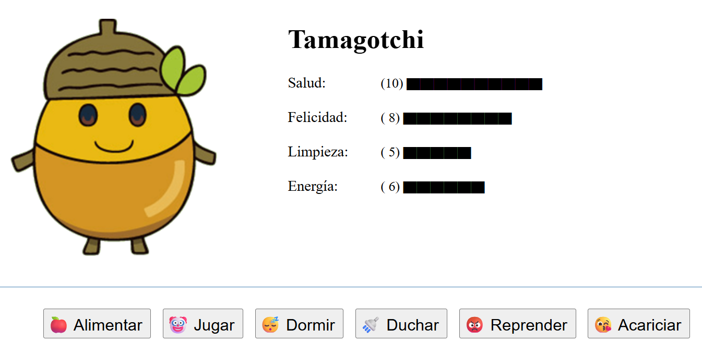

ACTIVIDAD |
|||
Proyecto UF1843. TAMAGOTCHICrear un programa que guarde en un objeto la información sobre un Tamagotchi (mascota virtual). Además de la propiedad Al iniciar el programa se deberá asignar aleatoriamente los valores a cada propiedad. Además se deberá activar una función que reste un punto a cada propiedad cada 5 segundos. Se deberá mostrar un botón para cada una de las siguientes posibles acciones (funciones) a realizar, que modificarán los valores de sus propiedades de la siguiente forma:
Cuando el usuario selecciona una acción, la pantalla deberá reflejar el cambio de valor de las propiedades. Requerimientos del programa:
 Deberéis subir las URL del tamagotchi al siguiente formulario |
|||
RESULTADO DE LA OBSERVACIÓN Y EVALUACIÓN DE LA PRÁCTICA |
||||||
ACTIVITAT |
FACTORES |
PUNTUACIÓN |
||||
|---|---|---|---|---|---|---|
| Max | Obtenida | Min | ||||
| Tamagotchi | Responsividad | 1 | 0 | |||
| Diseño orientado al usuario (contraste de colores y textos adecuados) | 1 | 0.5 | ||||
| Clase Tamagotchi | 1 | 0 | ||||
| Creación del objeto tamagotchi | 1 | 0 | ||||
| Asignación aleatoria inicial de propiedades | 1 | 0 | ||||
| Funciones flecha | 1 | 0 | ||||
| Mapeo del HTML | 1 | 0 | ||||
| Asignación de Escuchadores de Evento | 1 | 0 | ||||
| Uso del temporizador | 1 | 0 | ||||
| Remoción de Escuchadores de Evento | 1 | 0 | ||||
| Total | 10 | 0.5 | ||||